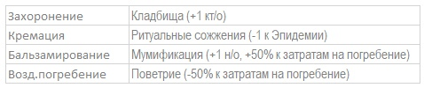

В стране выделяется религия, являющаяся основной для данного государства. Если в его состав входят провинции/города, отличающиеся своим вероисповеданием, то это увеличивает риск восстаний в данной локации.
Изменение гос. религии по инициативе игрока на другое вероисповедание возможно лишь в том случае, если в состав государства входят территории с этой религией, либо при соответствующем событии. При смене религии столица (вместе с правителем) принимает автоматически новую веру, а другие территории подлежат миссионерству в обычном порядке.
Каждая религия отличается догматами, которые она исповедует.
Это их отличительные особенности. 1-й догмат дан изначально. Он неизменяем. Принять 2-й догмат можно по решению игрока. Его можно выбрать из 3-х данных вариантов. Принятие 2-го догмата осуществляется в целом для всех стран, исповедующих данную религию. 2-й догмат (варианты 2-го догмата даны в балансах) можно менять, тратя на это очки веры о/в.
Еще одной отличительной чертой религии является обряд погребения. Его менять нельзя. Каждый тип погребения имеет свои особенности:
Миссионерская деятельность – смена вероисповедания подвластных провинций на титульную религию, а также принятие иной государственной религии.
В отличие от ассимиляции, подвергнуться миссионерству может любая провинция (и колония) страны, если ее население не исповедует гос.религию. Если игрок желает направить миссионера в требуемую для смены религии провинцию, он указывает это в своей заявке.
Примечание: так же необходимо наличие необходимой религии в этой или соседней локации.
Каждый ход проведения миссионерской деятельности обходится стране в определенное в балансе количество о/в.
Начатый процесс новообращения увеличивает РВ на 10%. Как и в случае с ассимиляцией смена религии носит вероятностный характер. Базовая вероятность перекреста провинции составляет 10%.
Содержание культовых сооружений (основное назначение религ.построек – снижение РВ в провинциях и городах страны) стоит денег. Кроме того, в культовые расходы входят затраты на миссионерскую деятельность.
Помимо расходов культовые постройки способны приносить доход от паломничества.
Святые места — особые локации, дающие бонусы стране, владеющей ими.
К святым местам относятся: г. Ершалаим, г.Латиум, провинция Арианна, г.Ясриб, провинция Шамбала и др.места. По случайным событиям в локациях могут обнаруживаться артефакты. Если в соответствующей локации есть религиозная постройка, то такая локация становится местом поклонения паломников.
Главное предназначение культовых построек — снижение РВ в провинциях и городах, а также получение кт/о. У каждой религии свои культовые постройки. Культовые постройки дают эффект только если население данной провинции/города исповедует соответствующую религию.
Проповеди — особый вид действий в локациях. Проповедование снижает РВ в соответствующей локации на 8% (если гос. религия является главенствующей в данной локации) или 4% (если гос. религия представлена как вторая по распространению). Проповедование влечет расход о/в (цена указана в балансе).